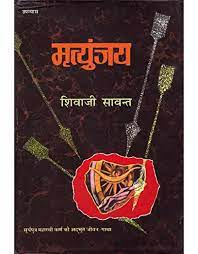

A beautiful book for reading in Marathi by Shivaji Sawant. An Indian novelist in a Marathi language. Mrityunjaya, a Marathi book based on “Karna” of Mahabharata. This is the best book for reading in Marathi. This book is translated into English, Hindi, Gujarati, Kannada.
